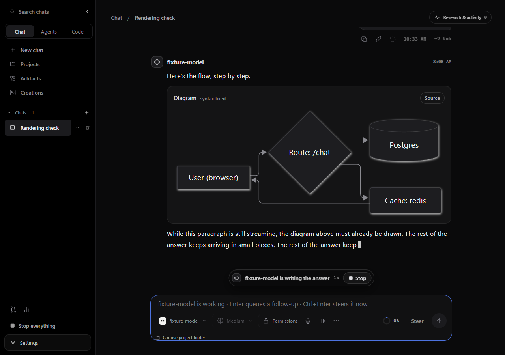
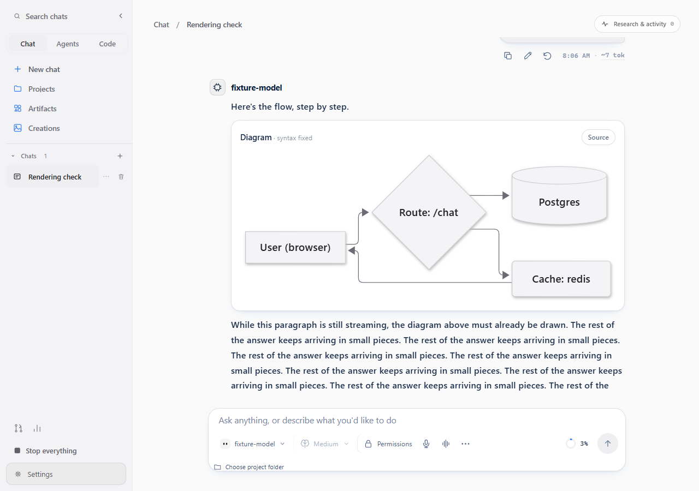
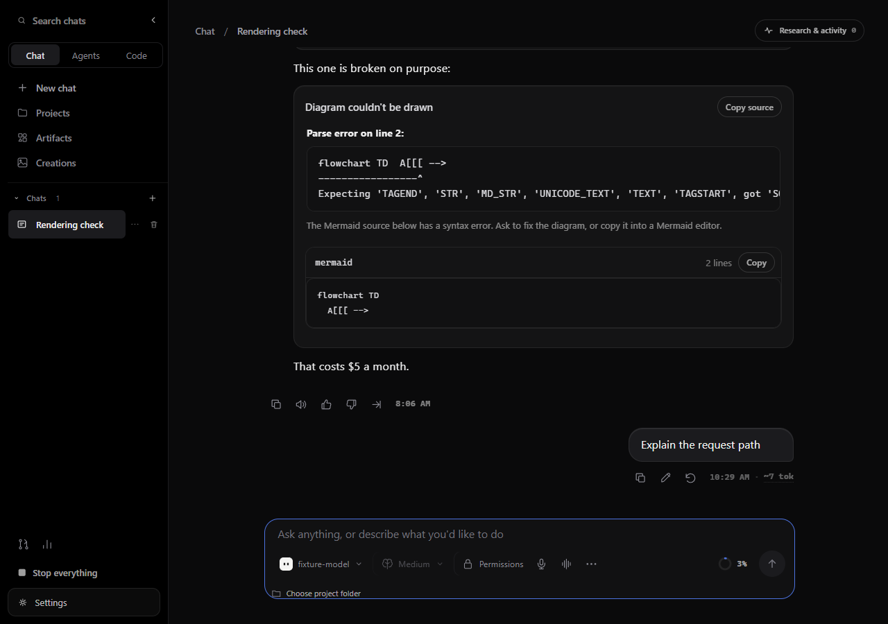
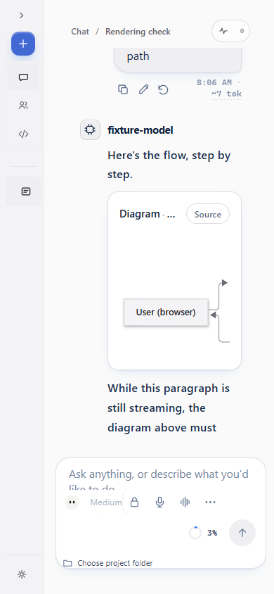

EchoSpeak / Chat: harness, intelligence and rich responses
28 October 2026 · technical record: docs/research/chat-harness.md
The model didn't get worse.
Rendering bugs and a harness written for agents did.
Evidence: every screenshot comes from the browser check: the real production build, real Mermaid and KaTeX, and the backend's real event and history format replayed from a fixture. Prompt sizes come from requests captured by a local fake model server. No real model was called. Live answer quality is the owner's evaluation.
Diagrams draw while the reply streams, after it finishes, and after a reload




Five causes, none of them the model
| What you saw | Cause | Fix |
|---|---|---|
| Mermaid as source code | Mermaid rejects common slips: A[User (you)], A --> B: text, →, a node called end, prose in the block (6 of 20 realistic outputs) | Conservative repair, tried only if the original fails; marked "syntax fixed"; Source shows the original |
| Mermaid as source, part 2 | A reply shown from its final text (for example a queued follow-up) used a second, plain Markdown renderer | One renderer for every assistant message |
| Diagrams only at the very end | New renderers every token remounted each diagram, cancelling its render | Stable renderers; draw as soon as the block closes; cached drawings |
| Raw \( … \) math | Only $$ was read, but OpenAI's Model Spec has models default to \( \) and \[ \] | Both are rendered (never inside code); a $5 price stays text |
| Dark diagrams in light mode | Mermaid ignores custom colours unless the theme is "base"; re-rendering under a visible id edited the shown diagram | Base theme with light and dark palettes, redrawn on theme change |
A diagram that still can't be drawn shows Mermaid's message, the line with a caret pointing at the problem, the source and a Copy button, instead of silently showing code.
Chat now has its own instructions
How to answer
Answer first, then the why, then an example. Calibrate depth. Form a view. Say what's uncertain. Assume sensibly instead of asking. Don't flatter.
When to use tools
Stable knowledge: answer. Current or niche: search. Research: several searches, read pages, cross-check, cite the pages actually read.
Formatting
Markdown that fits the answer; Mermaid with quoted labels; \( \) and \[ \] math; chart and table blocks the app draws.
Following OpenAI's public Model Spec and web-search guide as an engineering reference, not as a copy of ChatGPT's private system. Smart model choice never swaps the model you picked in Chat.
What Chat can do, enforced in code
Chat can
Search and read the web · live cards · read files you point at · read images you share · memory and past Chat conversations · calculate · artifacts, images and video · reminders · connected apps (they ask first) · open an app by name (asks first, no arguments, never a shell)
Agents and Code do
Run commands · change files · mouse and keyboard · capture the screen · drive a browser · send email · delegate and spawn workers
Two layers: tools outside Chat's allowlist are never offered (even with every permission switched on), and a run-time guard refuses them anyway, including aliases such as "bash" and names a model invents.
Memory: your facts and your Chat history
How it's checked
The browser check renders the reply live, after it finishes and after a reload, in dark and light themes and at desktop and phone widths, and fails on any page error or stray network call. Unit tests pin the repair rules and math handling. Backend tests pin Chat's tools (with every permission on), its run-time guard, its prompt and its memory scope.
Your check: ask a real model for a diagram, a formula and a comparison table in Chat; try a quick question (it should answer without searching) and a research question (several sources, cited).